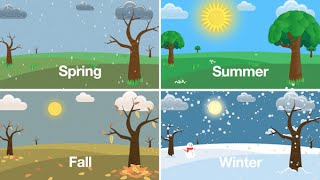

Seasons Project
A season is a division of the year based on changes in weather, ecology, and the number of daylight hours in a given region. On Earth, seasons are the result of Earth's orbit around the Sun and Earth's axial tilt relative to the ecliptic plane. In temperate and polar regions, the seasons are marked by changes in the intensity of sunlight that reaches the Earth's surface, variations of which may cause animals to undergo hibernation or to migrate, and plants to be dormant. Various cultures define the number and nature of seasons based on regional variations, and as such there are a number of both modern and historical cultures whose number of seasons vary.